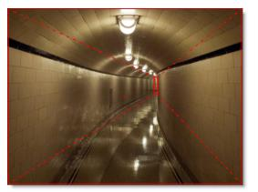

Depth
The Depth node contains a dedicated toolset for creating depth channels.
Creating Depth Objects
There are a number of tools to create depth maps for 2D images which include: Constant, Horizon, Ramp, Hall, Tunnel, Edges, and Alpha.
Constant
The Constant depth object sets a constant depth for the entire frame. It is useful for setting the depth of objects that are completely flat.
1 Load some source footage and create a session.
2 In the Trees window, add a Depth node from the Nodes > Image group and connect it to the source node.
3 Single-click in the center of the Depth node to view and edit it.
4 Select the Constant icon and click on the screen to create the object.
5 Click the D icon above the Viewer or press the D key to view the depth map.
6 In the Object window, adjust the Depth numeric field to set the level of depth.
A value of 1 is nearest (white), 0 is farthest (black) and .5 is a mid depth (50% gray). The depth can be set interactively by Ctrl/Cmd-vertical dragging on the image in the Viewer.
7 Press the D key to toggle the Depth view off.
Horizon
The horizon depth object creates a horizon line.
1 Select the Horizon icon and click on the screen to create the object.
2 The position can be set by dragging the center point.
3 The rotation can be set by dragging the solid line.
4 The size can be set by dragging the dashed line.
5 Click the D icon above the Viewer or press the D key to view the depth map.
6 Select the Blend Amount icon above the Viewer and adjust the slider that appears to control how much of the image is mixed into the Depth map. The setting is remembered the next time you view the Depth map.
7 In the Object window, adjust the Near and Far Depth numeric fields to set the level of depth.
Ramp
The Ramp depth object creates a horizontal or vertical ramp blending out from the center.
1 Select the Ramp icon and click on the screen to create the object.
2 The position can be set by dragging the center point.
3 The rotation can be set by dragging the solid line.
4 The size can be set by dragging the dashed lines.
5 Click the D icon above the Viewer or press the D key to view the depth map.
6 In the Object window, adjust the Center, Left and Right Depth numeric fields to set the level of depth.
7 Press the D key to toggle the Depth view off.
Use the Depth Preview window to visualize and edit the objects’ depth position in 3D space.
8 Click and drag in the Depth Preview window to move the image around in a perspective view, and then adjust the depth of your objects as needed.
Hall
The Hall depth object creates a perspective gradient as if you are looking down a hallway.
1 Select the Hall icon and click on the screen to create the object.
2 The position can be set by dragging the center point.
3 The rotation can be set by dragging the corner of one of the squares.
4 The outer square can be offset from the center position by Alt-dragging the center point or outer square.
5 The size can be set by dragging the inner and outer squares.
6 Click the D icon above the Viewer or press the D key to view the depth map.
7 In the Object window, adjust the Inner and Outer Depth numeric fields to set the level of depth.
8 Press the D key to toggle the Depth view off.
Use the Depth Preview window to visualize and edit the objects’ depth position in 3D space.
9 Click and drag in the Depth Preview window to move the image around in a perspective view, and then adjust the depth of your objects as needed.
Tunnel
The Tunnel depth object creates a circular gradient as if you are looking down a tunnel.
1 Select the Tunnel icon and click on the screen to create the object.
2 The position can be set by dragging the center point.
3 The outer circle can be offset from the center position by Alt-dragging the center point or outer circle.
4 The size can be set by dragging the inner and outer circles.
5 The aspect ratio can be set by dragging the point at the bottom of the outer circle.
6 Click the D icon above the Viewer or press the D key to view the depth map.
7 In the Object window, adjust the Inner and Outer Depth numeric fields to set the level of depth.
8 Press the D key to toggle the Depth view off.
Use the Depth Preview window to visualize and edit the objects’ depth position in 3D space.
9 Click and drag in the Depth Preview window to move the image around in a perspective view, and then adjust the depth of your objects as needed.
Edges
The Edges depth object runs an edge detection and objects with edges or a lot of structure are placed in front.
1 Select the Edges icon and click on the screen to create the object.
2 Click the D icon above the Viewer or press the D key to view the depth map.
3 In the Object window, adjust the Amount to set the edge brightness.
4 Change the Threshold to limit the amount of edges that are detected.
5 Press the D key to toggle the Depth view off.
Alpha
Converts the alpha channel hooked into the Depth node’s alpha inputs into a depth map.
1 Generate an alpha channel from either the Power Matte, Roto, Paint or zMatte nodes.
2 Connect the output of the node generating the alpha into one of the Depth node’s alpha inputs. For instance, Alpha 1.
3 In the Depth node, select the Alpha icon and click on the screen to create the object.
4 In the Object window, select the node input that you plugged your alpha source into.
5 Click the D icon above the Viewer or press the D key to view the depth map.
The alpha channel produced in one of the other Silhouette nodes is converted to a depth map. In the above example, Power Matte was used with open shapes placed far apart which generates an organic looking gradient with edge detail.
Note: Another beneficial node to use in conjunction with the Depth node is Roto Blend which blends the opacity of shapes together creating smooth gradients. Go to the Roto Blend tutorial to see how it works.
6 Select Constant, Linear, Radial or Ramp from the Depth Type pop-up in the Object window.
• Constant sets a constant depth for the entire depth map.
• Linear fills the depth map in areas of the original alpha with a linear gradient containing two depth values.
• Radial fills the depth map in areas of the original alpha with a radial gradient.
• Ramp fills the depth map in areas of the original alpha with a linear gradient containing three depth values.
7 Depending on the Depth Type selected, adjust the depth numeric fields that are displayed.
8 Press the D key to toggle the Depth view off.
Combining Shapes with Depth Objects
All of the tools from the Roto node are included in the Depth node so that they may be used in together with the depth objects. Multiple gradients used in conjunction with shapes can create a virtual soft box yielding natural depth gradients. The workflow is to create one or more gradient depth objects in a layer and then use a shape to mask them.
1 Add a gradient depth object inside of a layer.
2 Click the D icon above the Viewer or press the D key to view the depth map.
3 Create the proper depth shading using the gradient.
A shape can now be used to mask the gradient.
4 Create a shape to mask the gradient.
5 Set the shape’s Depth > Type to None.
Setting the shape’s depth to none is done since the shape is not contributing to depth in this example--it is only masking it.
6 Select the layer and enable its Depth > Obey Alpha control.
The layer now uses the alpha from the shape to mask whatever else is in the layer, in this case, the gradient.
7 Use multiple gradients, mix them together with Blend Modes and then mask them with one or more shapes.
Each layer allows separate control over the Near Depth > and Far Depth.
8 Select a layer and use the Near Depth and Far Depth controls to adjust the near and far depth for the entire layer.
The technique of using gradients masked by shapes within layers is a very powerful feature which creates accurate and realistic depth maps.